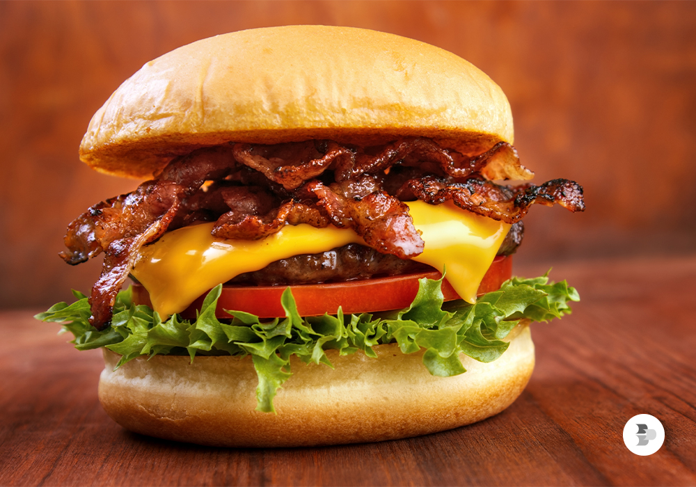
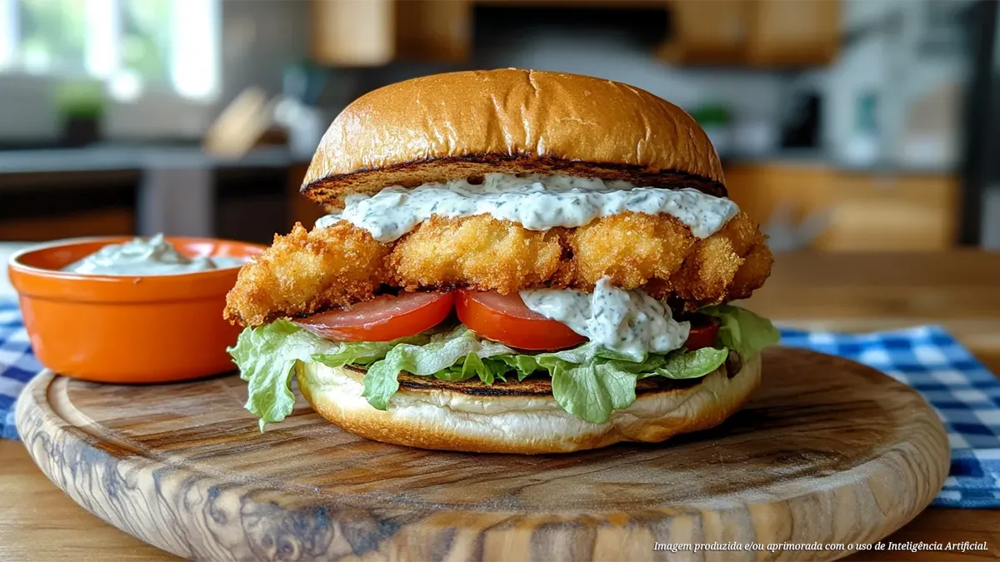

Imagine um hambúrguer artesanal cuidadosamente elaborado, onde cada detalhe é pensado para transformar uma simples refeição em uma experiência sensorial. O pão, levemente dourado e macio, tem a textura perfeita para envolver os ingredientes sem desmanchar. O hambúrguer em si é suculento, feito de carne de alta qualidade, temperado na medida certa, que derrete na boca liberando um sabor intenso e equilibrado.
O queijo, derretido no ponto ideal, se mistura aos vegetais frescos — alface crocante, tomate suculento, cebolas caramelizadas e muuuuito bacon — criando camadas de sabor que se complementam de forma harmoniosa. Molhos artesanais adicionam personalidade, seja com um toque levemente picante ou uma suavidade cremosa que desperta o paladar.
Cada mordida revela dedicação e paixão na sua preparação. É um hambúrguer que não apenas satisfaz a fome, mas desperta prazer e encanto, mostrando que a simplicidade, quando feita com cuidado e ingredientes selecionados, pode se tornar algo extraordinário.

Este lanche de peixe é simplesmente impecável. O peixe, fresco e delicadamente temperado, mantém sua suculência e textura suave, enquanto a leve crocância da casquinha ou empanado contrasta perfeitamente. O pão, macio e levemente amanteigado, abraça cada ingrediente com perfeição, sem perder a firmeza.
As folhas verdes frescas e os vegetais selecionados trazem um frescor que equilibra o sabor do peixe, e o molho artesanal, delicado e harmonioso, realça cada nuance sem jamais dominar o paladar. Cada mordida é uma explosão de frescor, sabor e delicadeza, mostrando que simplicidade e cuidado podem se unir para criar algo extraordinário.
Todos os direitos reservados